Probabilitatea binomială se referă la estimarea prevalenței sau proporției unui eveniment binar (succes sau eșec) în cadrul unei serii de încercări independente de tip Bernoulli. Cu alte cuvinte, ea măsoară probabilitatea de a obține un anumit număr de succese într-un număr fix de încercări, fiecare încercare având aceeași probabilitate de succes. Distribuția binomială, care fundamentează această probabilitate, este parametrizată de \(n\) (numărul total de încercări) și \(p\) (probabilitatea de succes într-o singură încercare).
Eveniment Bernoulli :)
Un exemplu clasic este aruncarea unei monede pentru a estima probabilitatea de a obține cap sau pajură într-un număr determinat de aruncări. Totuși, aplicabilitatea conceptului se extinde mult dincolo de acest caz simplu, fiind relevantă în diverse situații, precum:
Estimarea prezenței sau absenței unei patologii într-un eșantion din populație,
Determinarea probabilității de succes sau eșec în îndeplinirea unei sarcini specifice,
Evaluarea deciziilor în dileme morale, unde rezultatele pot fi văzute ca ‘corect’ sau ‘greșit’.
2. Studiul de caz istoric: “The Lady Tasting Tea”
Cu peste 80 de ani în urmă, Sir Ronald Fisher conduce un experiment, cunoscut sub numele de “The Lady Tasting Tea”, pentru a verifica dacă colega sa, Dr. Muriel Bristol, era capabilă să distingă ordinea în care ceaiul și laptele au fost adăugate într-o ceașcă, bazându-se exclusiv pe gust.
În cadrul experimentului, Bristol a fost pusă în fața a opt cești de ceai, fiindu-i comunicat că în patru dintre acestea laptele a fost turnat înaintea ceaiului.
În contextul acestui experiment, Fisher a introdus conceptul de ipoteză nulă (\(H_0\)), care presupunea că Dr. Bristol nu putea deosebi secvența adăugării ingredientelor, sugerând astfel că selecțiile ei nu erau altceva decât ghiciri aleatorii.
Raționamentul folosit a fost următorul:
Se presupune că Dr. Bristol nu are abilitatea de a face distincția și selectează ceștile bazându-se pe ghicit: adică, \(H_0\) este adevărată.
Se calculează probabilitatea (\(p\)) de a obține un rezultat cel puțin la fel de extrem ca cel observat în realitate.
Dacă probabilitatea calculată este suficient de mică, acest lucru servește ca bază pentru respingerea ipotezei nule, sugerând că performanța Dr. Bristol nu poate fi explicată prin simpla întâmplare.
3. Criticile la adresa valorii \(p\) și principiul verosimilității
Reevaluarea experimentului lui Fisher de către Lindley (1993)
Context: Reevaluarea experimentului lui Fisher.
Scop: Evidențierea limitărilor valorii \(p\), dependența acesteia de planul de eșantionare și violarea principiului verosimilității (likelihood principle)
Limitările valorii \(p\) și violarea principiului verosimilității
Exemplu: situații care pot genera: CCCCCG:
Calculul valorii \(p\) pentru planul fix de șase perechi
Pentru situația exact șase perechi și trebuie să identifice ceașca cu ceai turnat primul, putem folosi distribuția binomială pentru a calcula valoarea-p.
## Calculul valorii-p pentru planul fix de șase perechivaloare_p <-binom.test(5, 6, p =0.5, alternative ="greater")$p.valuecat("Valoarea-p pentru planul fix de șase perechi este:", valoare_p, "\n")
Valoarea-p pentru planul fix de șase perechi este: 0.109375
Calculul valorii \(p\) pentru planul de continuare până la prima eroare
Pentru situația “prima greșeală”, utilizăm distribuția binomială negativă pentru a calcula valoarea-p.
## Calculul valorii-p pentru planul de continuare până la prima eroare# P(cel puțin 5 reușite înainte de prima eroare) = 0.5^5valoare_p2 <-pnbinom(4, size =1, prob =0.5, lower.tail =FALSE)cat("Valoarea-p pentru planul prima greseala este", valoare_p2, "\n")
Valoarea-p pentru planul prima greseala este 0.03125
Diferența aici constă în includerea cazurilor mai extreme. În planul „testare șase căni”, singurul rezultat mai extrem este CCCCCC (adică distribuția binomială), în timp ce pentru planul „testare până la eroare” rezultatele mai extreme includ secvențe precum CCCCCCCG și CCCCCCCCCCG (adică distribuția binomială negativă).
„Astfel, utilizarea valorii-p implică faptul că o ipoteză care ar putea fi adevărată poate fi respinsă pentru că nu a prezis rezultate observabile care nu au avut loc. Acest lucru pare o procedură remarcabilă.” (Jeffreys, 1961, p. 385)
4. The alcohol tasting group: Diferențierea berii cu și fără alcool
Punctul de plecare:
Să presupunem că doriți să aflați în ce măsură oamenii pot sa deosebească între berea cu și fără alcool. Pe măsură ce procesul de extragere a alcoolului este tot mai avansat sau chiar radical diferit, sunteți curioși să aflați care este proporția celor care pot să deosebească prin gust aceste două produse.
Dat fiind faptul ca am observat un număr de \(s\) = 17, si \(e\) = 2, care este proportia celor care au reusit sa identifice corect berea cu alcool?
5. Teorema lui Bayes și aplicabilitatea ei
Definiția și importanța probabilității posterioare
Finalitatea procesului de învățare Bayesian este probabilitatea posterioară, pe care o notăm ca \(p(θ|y)\). Dintr-o perspectivă epistemologică, probabilitatea posterioară conține tot ceea ce este de știut despre o propoziție incertă (cum ar fi o ipoteză științifică sau valorile parametrilor). Pe scurt, theta (\(θ\)) este parametrul nostru de interes, și ceea ce căutăm noi.
Epistemologia și formalizarea teoremei lui Bayes
Theta (\(θ\)), rezultă din combinația dintre informațiile obținute din datele \(y\) (observațiile noastre) și informațiile noastre anterioare (ceea ce știm deja despre \(θ\)). Acest tip de învățare este formalizat prin Teorema lui Bayes:
\(θ\) adică \((p(θ|y)\) este probabilitatea posterioară; \(p(y|θ)\) este procesul de generare a datelor, denumit de obicei verosimilitate sau likelihood; \(p(θ)\) este probabilitatea anterioară a lui \(θ\); și \(p(y)\) este o constantă de normalizare. Nu ne vom preocupa chiar acum de constanta de normalizare, \(p(y)\), deoarece aceasta nu ne afectează concluziile. Ea este acolo doar pentru a transforma verosimilitatea - obținută din înmulțirea \(p(y|\theta)p(\theta)\) - în probabilități (adică valori ce sumate ajung la 1).
Prin urmare:
\[
p(\theta|y) \propto p(y|\theta)p(\theta)
\]
Ceea ce este important de înțeles este că \(θ\) este un parametru necunoscut, dar pentru a estima incertitudinea noastră cu privire la \(θ\), vom încerca diferite valori ale lui.
De exemplu, dorim să cunoaștem proporția celor care identifică corect berea cu alcool, care variază de la 0 la 1 (cu 0 înseamnă că nimeni nu o face; 1 înseamnă că toți fără excepție reușesc). Astfel, în ecuația noastră, \(θ\) ar reprezenta toate valorile cuprinse între 0 și 1. Cu toate acestea, există o infinitate de valori cuprinse între 0 și 1, astfel încât, în practică, am putea doar încerca valori cuprinse între 0 și 1.
Vom utilizează un proces relativ simplu numit aproximare prin grilă, în care vom folosi o grilă de valori cuprinse între 0 și 1, la distanță egală, pentru \(θ\).
Acest proces de aproximare funcționează perfect pentru cazuri de acest gen, dar pe măsură ce vom înainta în material generarea lui \(θ\) devine imposibilă prin acest procedeu, și vom recurge la procedee mai complexe cum ar fi Markov-Chain Monte-Carlo (MCMC).
6. Construirea modelului Bayesian
6.1 - Aproximare prin grila pentru determinarea lui \(\theta\); Componentele modelului Bayesian
Likelihood (Verosimilitatea)
Verosimilitatea (în acest caz, verosimilitatea binomială a) datelor este un concept destul de greu de înțeles la “prima strigare”. Verosimilitatea se referă la “cât de probabile sunt datele, având în vedere o anumită valoare pentru \(θ\)”.
Dacă vreți o explicație pe îndelete, vă recomand acest mic videoclip.
Oricum, pentru varianta binomială verosimilitatea are această structură:
\(y\) este de numărul de reușite și \(n\) este numărul de încercări.
Pentru exemplul nostru, unde avem 17 reușite din 19 încercări, calculăm \(p(y|\theta)\) pentru toate valorile \(\theta\) de la 0 la 1 și le reprezentăm grafic.
Acum, am putea să le calculăm de mână, pentru că nu sunt multe, dar putem să le și obținem prin funcția R dbinom(). Iată codul:
library(tidyverse)library(MetBrewer)library(latex2exp)library(tidyr)## Defineste spatiul de probabilitati (de la 0 la 1)## Pentru 100 de valori posibile ale lui thetatheta <-seq(from=0, to=1, length.out=100)## Calculeaza verosimilitata cu functia dbinom()## Pentru 17 reușite din 19 încercări, cu ## prob = adica probabilitatea de a obține reușita## care provine din vectorul theta.## Pentru o probabilitate theta de .10, dbinom(17, 19, prob = .10)## Functia dbinom va calcula pentru fiecare valoare posibila a lui theta## verosimiliatea de observa 17 reusite din 19 incecari.likelihood <-dbinom(17, size=19, prob=theta)## Sa le lipim intr-un singur dataframe pentru plotdf <-data.frame(theta, likelihood)## care e valoarea maxima?df %>%filter(likelihood ==max(likelihood))
theta likelihood
1 0.8989899 0.2854681
## Iată și graficulggplot(df, aes(x = theta, y = likelihood)) +geom_area(alpha = .5, fill =met.brewer("Gauguin", 1)) +labs(x =TeX("$\\theta$"),y ="Verosimilitatea",title =TeX("$\\theta^{17}(1 - \\theta)^{19 - 17}$"),subtitle ="Linia neagra = valoarea lui theta unde verosmilitatea atinge valoarea maximă",caption ="Valori nonnormalizate") +geom_vline(xintercept = .89, size =0.5, color ="black", linetype =2) +scale_x_continuous(breaks =seq(0, 1, by = .10)) +theme_minimal()+theme(axis.text.y =element_blank(),plot.title =element_text(hjust = .5, size =20))
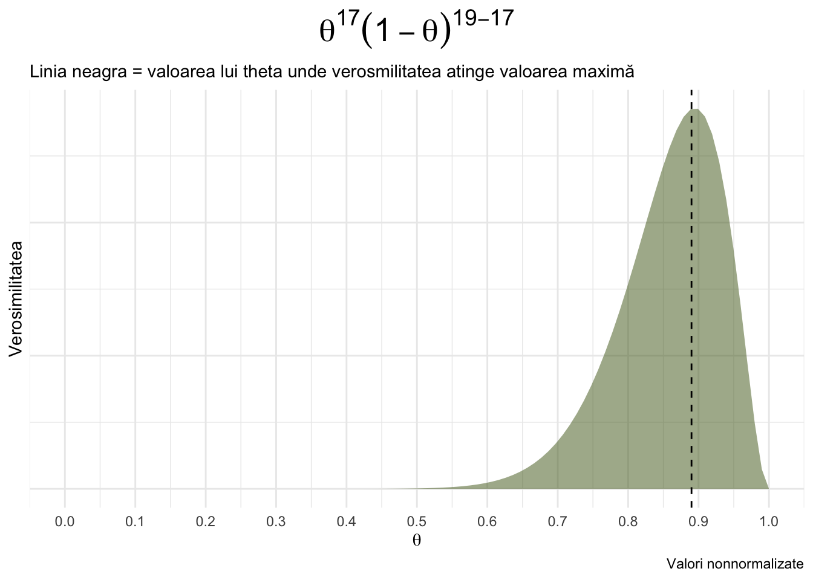
In Bayes, totuși, nu ne mulțumim doar cu estimarea punctuală și în schimb folosim întreaga densitate pentru a exprima incertitudinea despre \(\theta\).
Informații anterioare (Expectanța)
Pentru că facem inferență de tip Bayesian, avem oportunitatea de a incorpora informații anterioare în modelul nostru.
\(p(θ)\) din teorema lui Bayes, este probabilitatea anterioară a lui \(θ\) și poate reprezenta date anterioare sau chiar cunoștințe subiective despre valoarea probabilă și incertitudinea lui \(\theta\).
O uniformă de tip \(beta(1,1)\) fiecare valoare posibilă a lui \(\theta\) are o probabilitate anterioara de 1, ele fiind egale, adică toate \(\theta\) sunt la fel de probabile.
O abordare obișnuită atunci când se alege priorul este identificarea unui prior conjugat: o formulă de exprimare a priorului care are o structură de date similară cu cea a verosimilității. În acest caz, un prior conjugat pentru verosimilitatea binomială este funcția beta:
unde \(a\) poate reprezenta reușitele, iar \(b\) poate reprezenta eșecurile.
Observați similitudinea dintre formulele pentru funcțiile binomială și beta.
Acestea au structuri de date identice, ceea ce face ca beta să fie un prior conjugat pentru verosimilitatea binomială. Să folosim un \(beta(1,1)\) ca a priori, reprezentând cunoștințele noastre despre o probabilitate egală a lui \(\theta\).
Codul generativ pentru un prior uniform
Pentru a genera 100 de valori de 1 (pentru egalitate), folosim funcția dbeta().
## Distributie beta(1,1)## Cei doi parametri, alpha (shape1) si beta(shape2) controleaza forma distributiei de tip betaprior.beta <-dbeta(theta, shape1 =1, shape2 =1)
Distribția Posterioară (în sfârșit!)
Probabilitatea posterioară, \(p(θ|y)\) ia în considerare verosimilitatea și expectanțele noastre anterioare privind parametrul. Aceasta este adesea privită ca un compromis între verosimilitatea datelor și probabilitatea anterioară. Acest lucru este mai ușor de înțeles din punct de vedere grafic:
## înmulțește probabilitatea binomială cu 100 pentru a o exprima în "termeni de probabilitate" ca și beta.## practic rescriem obiectul anteriorlikelihood <-dbinom(x =17, size =19, prob = theta)*100## Teorema lui Bayes, nenormalizataposterior <- likelihood * prior.beta## Să creăm un nou dataframe, care să cuprindă toate obiectele noastre create anterior.df <-data.frame(theta = theta,likelihood = likelihood,prior = prior.beta,posterior = posterior)## Folosiți pivot_longer pentru a crea o variabilă care să grupeze likelihood vs. prior vs. posterior## Pivot_longer data_long <-pivot_longer(df, cols =c(likelihood, prior, posterior))
7. Analiza și interpretarea distribuției posterioare
Reprezentarea grafică a distribuțiilor
data_long %>%ggplot(aes(x = theta, y = value, fill = name)) +geom_area(position =position_identity(), alpha = .5)+labs(x =TeX("$\\theta$"),y =NULL,color =NULL,title ="Distribuția Posterioară, Anterioară și Verosimilitatea")+scale_x_continuous(breaks =seq(0, 1, by = .10)) +scale_fill_manual(values=met.brewer("Tiepolo", 3)) +theme_minimal()
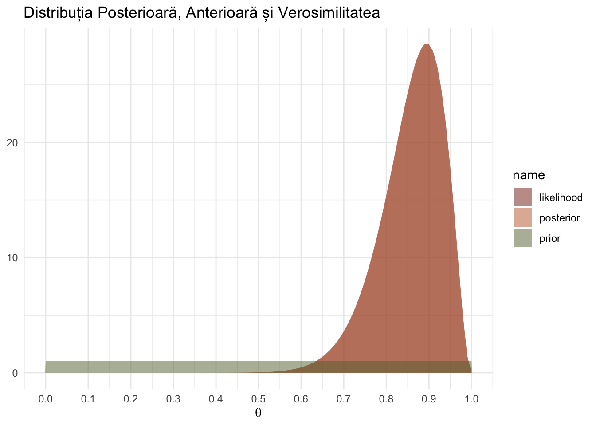
Graficul de mai sus prezintă distribuția posterioară, verosimilitatea și priorul unul lângă altul.
Observați cum priorul conține mai puțină certitudine decât verosimilitatea. Densitatea posterioară este pur și simplu probabilitatea anterioară înmulțită cu verosimilitatea, astfel încât conține informații din ambele surse. Este o regulă generală că, în cazurile în care există o mulțime de date, iar priorul nostru este în mare parte neinformativ, verosimilitatea (likelihood) va copleși priorul.
Același caz: Likelihood Binomială, Prior Beta, Posterior Beta
Parametrii distribuției beta, a și b, pot fi interpretați ca (convingerile noastre despre) succese și eșecuri anterioare.
Odată ce alegem valori pentru a și b, putem plota PDF-ul beta.
## Defineste thetax <-seq(0, 1, length.out =100)## Creaza dataframeuldf <-data.frame(x =c(x, x, x),y =c(dbeta(x, 1, 1), dbeta(x, 3, 3), dbeta(x, 21, 21)),Distributie =factor(rep(c('Beta(1,1)', 'Beta(3,3)', 'Beta(21,21)'), each =100)))## Plot cu ggplot2ggplot(df, aes(x = x, y = y, color = Distributie)) +geom_line() +labs(x ='theta',y ='Densitate') +scale_color_manual(values =c('Beta(1,1)'='steelblue', 'Beta(3,3)'='salmon', 'Beta(21,21)'='black')) +theme_minimal()
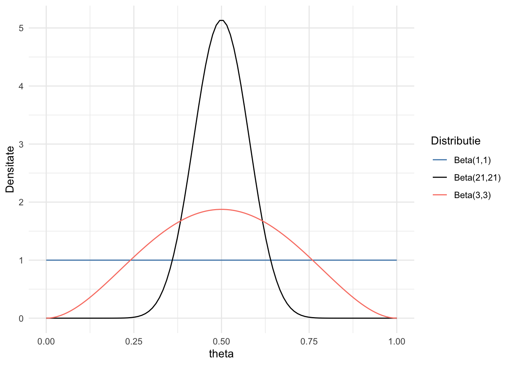
Ce înseamnă \(\theta \sim beta(a, b)\) în termeni practici?
Dacă nu avem multe informații anterioare, am putea folosi a=b=1; acest lucru ne oferă un prior uniform; acesta este uneori numit un prior neinformativ.
Dacă avem multe cunoștințe anterioare și/sau o convingere puternică că \(\theta\) are un anumit interval de valori, putem folosi valori mai mari pentru a și b pentru a reflecta certitudinea noastră mai mare despre parametru.
Remarcăm că, cu cât parametrii a și b sunt mai mari, cu atât dispersia distribuției este mai îngustă; acest lucru are sens pentru că o mărime mai mare a eșantionului (un număr mai mare de succese a, și un număr mai mare de eșecuri b) va duce la estimări mai precise.
Ca exemplu, să luăm patru priori beta diferiți, fiecare reflectând certitudine crescătoare.
\(beta(a=2,b=2)\)
\(beta(a=3,b=3)\)
\(beta(a=6,b=6)\)
\(beta(a=21,b=21)\)
Fiecare reflectă credința că \(\theta\) = 0.5, cu grade variate de (in)certitudine. Acum trebuie doar să introducem likelihoodul și priorul.
Dacă ar fi să extindem acest lucru mai departe pentru a trage concluzii reale cu privire la incertitudinea noastră privind proporția cautata, ar trebui să extragem eșantioane aleatorii din distribuția posterioară și să generăm estimări de interval pe baza acestor extrageri.
Lucrul cu distribuția posterioară, eșantionarea și sumarizarea inferențelor
Acum avem un o distribuție posterioară! De obicei, nu o putem folosi doar pe ea. Trebuie să calculăm media oricărei inferențe pe întreaga distribuție. Acest lucru necesită calcul infinitezimal, care este (1) dificil și (2) adesea imposibil.
Așa că, în schimb, putem folosi eșantioane din distribuție și așa putem face inferențe pe baza acestora.
## extrage esantioane din grila creata anterioresantion <-sample(theta, prob = posterior, size =10000, replace =TRUE)plot(esantion, main ="10,000 extrageri din distribuția posterioară")
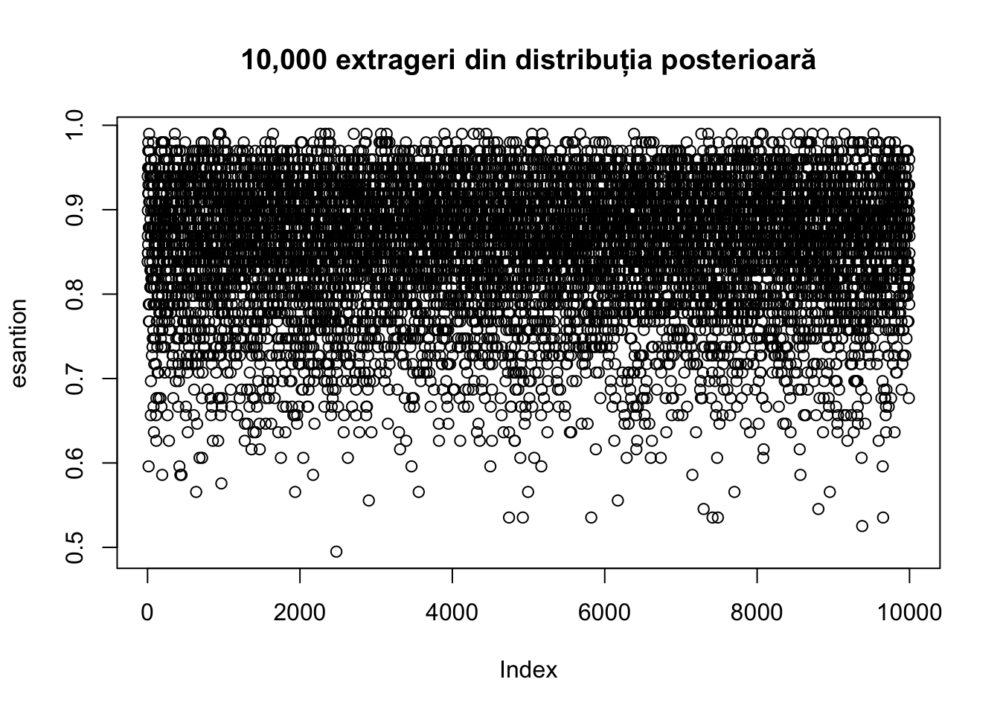
plot(density(esantion), main ="Distribuția celor 10,000 de eșantionări")
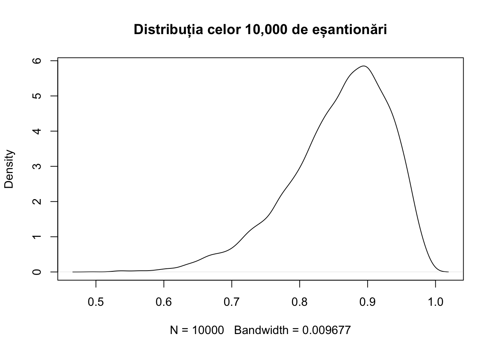
Odată ce am extras destule eșantioane din grila creată, putem începe să facem inferențe prin sumarizarea acestora.
De exemplu, putem calcula media acestui eșantion.
mean(esantion)
[1] 0.8577162
Sau, mediana și abaterea standard.
median(esantion)
[1] 0.8686869
sd(esantion)
[1] 0.07450625
Din fericire, avem funcții gata create pentru aceste sarcini, ca de exemplu describe_posterior() din pachetul bayestestR.
Summary of Posterior Distribution
Parameter | Median | Mean | MAP | 95% CI | pd | ROPE | % in ROPE
---------------------------------------------------------------------------------
Posterior | 0.87 | 0.86 | 0.90 | [0.68, 0.97] | 100% | [0.45, 0.55] | 0%
În cadrul inferenței Bayesiene, parametrii sunt estimați în mod probabilistic ca distribuții. Aceste distribuții pot fi rezumate și descrise prin raportarea a patru tipuri de indici:
Centralitate: media, mediana sau modul.
Incertitudine: HDI sau CI
Existența efecului: pd (probabilitatea direcției)
Semnificația efectului: de ex. ROPE.
Pe măsură ce veți primi mai multă încredere, aceste moduri de a cuantifica incertitudinea vă vor părea din ce în ce mai naturale.
De asemenea, aveți posibiliatea reprezentărilor grafice mai avansate din pachete precum ggdist().
O altă sarcină uzuală în cercetare este testarea ipotezelor, i.e., dacă un efect există sau nu, cum ar fi testarea dacă două tratamente sunt egal de eficace sau pur și simplu daca voi puteți diferenția între berea cu și fără alcool. \(NHST\) este o metodă pentru a testa aceste ipoteze, dar este limitată deoarece testele de semnificație nu oferă dovezi în sprijinul ipotezei nule.
Factorii Bayes sunt o metrică utilizată pentru a cuantifica suportul empiric pentru o ipoteză față de alta. BF permit actualizarea probabilităților anterioare (credințele inițiale înainte de a vedea datele) în probabilități posterioare (credințele actualizate după ce datele au fost observate), pe baza dovezilor furnizate de date.
În esență, factorul Bayes compară probabilitatea observării datelor sub două ipoteze diferite:
Matematic, factorul Bayes (BF) se calculează ca raportul dintre probabilitatea datelor sub ipoteza alternativă și probabilitatea datelor sub ipoteza nulă:
Bayes Factor (Savage-Dickey density ratio)
Parameter | BF
-------------------
(Intercept) | 74.46
* Evidence Against The Null: 0.500
plot(bf)+theme_default()
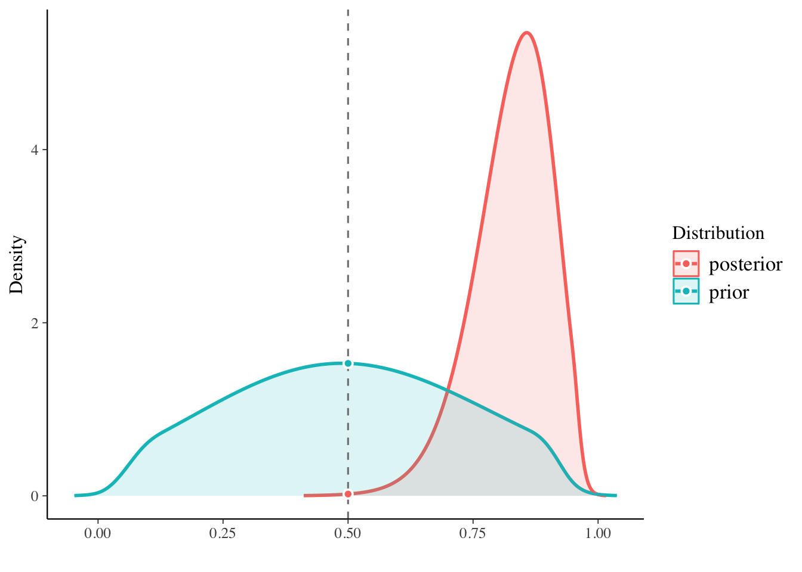
Ideea principală a analizei bayesiene este simplă și intuitivă. Există unele date care trebuie explicate, și avem un set de explicații candidate. Înainte de a cunoaște datele noi, explicațiile candidate au anumite credibilități anterioare de a fi cea mai bună explicație. Apoi, când sunt prezentate datele noi, mutăm credibilitatea către explicațiile candidate care contabilizează mai bine datele, și retragem credibilitatea de la explicațiile candidate care nu explică bine datele. O modalitate matematic impresionantă de a realoca credibilitatea se numește regula lui Bayes. Restul sunt doar detalii.
Datele reprezintă date parțiale de recensământ pentru zona Dobe a !Kung San, compilate din interviuri realizate de Nancy Howell la sfârșitul anilor 1960.
!Kung San sunt cea mai faimoasă populație de vânători-culegători din secolul 20, în mare parte datorită studiilor cantitative detaliate realizate de cercetători precum Howell (McElreath, 2020).
df <-read_csv("date/regresie.csv")
Pentru a vedea cum arata bivariat:
ggplot(df, aes(x = greutate, y = inaltime)) +geom_point(shape =21,alpha = .4,fill ="steelblue", color ="black", size =2) +geom_smooth(method ="lm", color ="steelblue")+ see::theme_lucid()
\(θ\) adică \((p(θ|y)\) este probabilitatea posterioară;
\(p(y|θ)\) este procesul de generare a datelor, denumit de obicei verosimilitate sau likelihood;
\(p(θ)\) este probabilitatea anterioară a lui \(θ\);
și \(p(y)\) este o constantă de normalizare. Nu ne vom preocupa chiar acum de constanta de normalizare, \(p(y)\), deoarece aceasta nu ne afectează concluziile. Ea este acolo doar pentru a transforma verosimilitatea - obținută din înmulțirea \(p(y|\theta)p(\theta)\) - în probabilități (adică valori ce sumate ajung la 1).
Modelul
Modelul este o regresie bivariată, unde înălțimea este prezisă din datele despre greutate. Modelul este:
Pentru a utiliza metode bayesiene pentru acest model, trebuie să definim a) un likelihood pentru date și b) priori pentru toți parametrii din model.
Așa cum s-a discutat anterior, un likelihood este o distribuție de probabilitate pentru a descrie datele. Pentru un model de regresie liniară, cum ar fi Ecuația 1, distribuția normală este cea mai comună alegere. Aceasta verosimilitate pentru date poate fi scrisă ca:
\[
î_i \sim \mathcal{N}(\mu_i, \sigma) \tag{3}
\]
ceea ce spune că valoarea înălțimii pentru persoana \(i^{th}\) urmează o distribuție normală (Gaussiană) cu o medie \(= \mu_i\) și o deviație standard \(= \sigma\). Media, numită și valoarea așteptată sau valoarea prezisă (expected value of the mean), a înălțimii este egală cu:
Ecuația 5 indică faptul că acest model are trei parametri unici de estimat: \(\alpha\), \(\beta_1\) și \(\sigma\). Rețineți că \(\mu_i\) este definit complet de \(\alpha\) și \(\beta_1\) și nu este estimat direct, ci calculat după ce \(\alpha\) și \(\beta_1\) sunt estimate. Fiecare dintre acești parametri necesită o distribuție prior. O alegere comună pentru parametrii de regresie este o distribuție normală, deoarece parametrii de regresie pot fi atât pozitivi, cât și negativi.
Stabilim priorul pentru \(\alpha\) și \(\beta_1\) la:
Pentru \(\alpha\), intervalul cu o medie de 178cm și variații de la 138 cm la 218 cm cuprinde o plajă largă de înălțimi medii plauzibile pentru populațiile umane. Toată lumea știe ceva despre înălțimea umană și poate stabili un prior rezonabil și vag de acest fel. Dar, în multe probleme de regresie, așa cum veți vedea mai târziu, utilizarea informațiilor anterioare este mai subtilă, deoarece parametrii nu au întotdeauna un înțeles fizic atât de clar.
Pentru \(\beta\):
O distribuție normală cu media la 0 oferă o probabilitate egală coeficienților pozitivi și negativi, iar o distribuție normală cu o deviație standard de 3 înseamnă că credem că 95% din coeficienți ar trebui să fie între \(\pm6\) (adică, \(\pm2\) deviații standard). Având în vedere intervalul tipic al relației greutate–înălțime, acest prior este destul de plat și neinformativ. Prin comparație, regresia prin metoda pătratelor minime poate fi considerată ca având un prior uniform (adică, toate valorile au aceeași probabilitate) de la \(-\infty\) la \(\infty\) pentru coeficienții de regresie.
Astfel, priorul nostru este mai informativ și mai rezonabil, dată fiind constrângerea asupra intervalului inălțime precum și posibilele relații greutate–înălțime.
Pentru \(\sigma\):
O alegere comună pentru un prior pe o deviație standard, cum ar fi \(\sigma\), este o distribuție half-Cauchy. Distribuția Cauchy completă nu este potrivită pentru o deviație standard deoarece distribuția Cauchy acoperă valori negative. Astfel, este necesară o distribuție half-Cauchy astfel încât deviația standard să poată lua doar valori pozitive. Priorul pentru \(\sigma\) a fost:
Bine. Acum modelul este construit. Să ne uităm la ce prezice de fapt. La ce se gândește modelul înainte de a vedea orice date?
O PPC este o tehnică utilizată în statistica Bayesiană pentru a evalua adecvarea distribuțiilor a priori alese înainte de observarea datelor sau de ajustarea modelului la date.
Aceasta implică simularea datelor din distribuțiile a priori ale parametrilor modelului și apoi utilizarea acestor date simulate pentru a genera rezultate bazate pe verosimilitatea modelului.
Acest proces ajută în evaluarea dacă priorii conduc la predicții rezonabile ale datelor și dacă sunt consistente cu cunoștințele de domeniu sau așteptările despre fenomenele reale care sunt modelate.
PPCurile sunt utile pentru identificarea problemelor cu priorii specificați, cum ar fi priori excesiv de restrictivi sau implauzibil de largi, înainte de a proceda cu analiza datelor. Acest pas poate preveni probleme potențiale în inferența posterioară și asigură că modelul Bayesian este construit pe o fundație solidă.
priors <-c(prior(normal(178, 20), class = Intercept),prior(normal(0, 3), class = b),prior("cauchy(0,2.5)", class ="sigma"))mean_greutate <-mean(df$greutate)df$greutate_z <- df$greutate - mean_greutate expectante <-brm(bf(inaltime ~1+ greutate_z),data = df,family =gaussian(),prior = priors,sample_prior ="only")conditional_effects(expectante)
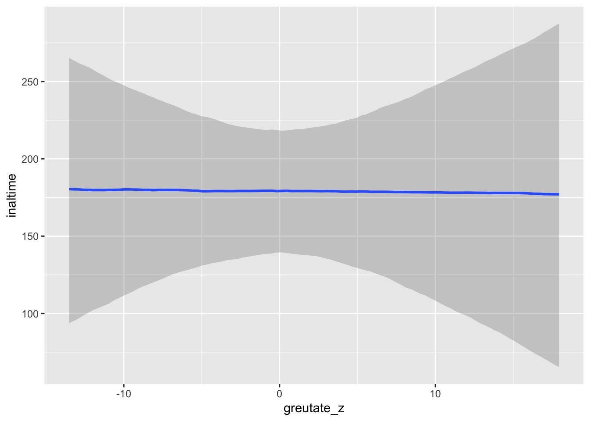
Acestea sunt presupuneri complet nerezonabile, chiar dacă într-un fel funcționează. Cu siguranță putem face mai bine.
Multe dintre acele linii sunt complet implauzibile, așa că vom folosi în schimb un prior lognormal pentru β: Distribuția lognormală forțează β să fie > 0 și este aglomerată în jos la valori scăzute, cam ca 1
ggplot() +stat_function(fun =~dlnorm(., 0, 1), geom ="area", fill ="salmon",alpha = .5) +xlim(c(0, 5)) +labs(x ="Valori simulate β", y ="Densitate")+theme_default()
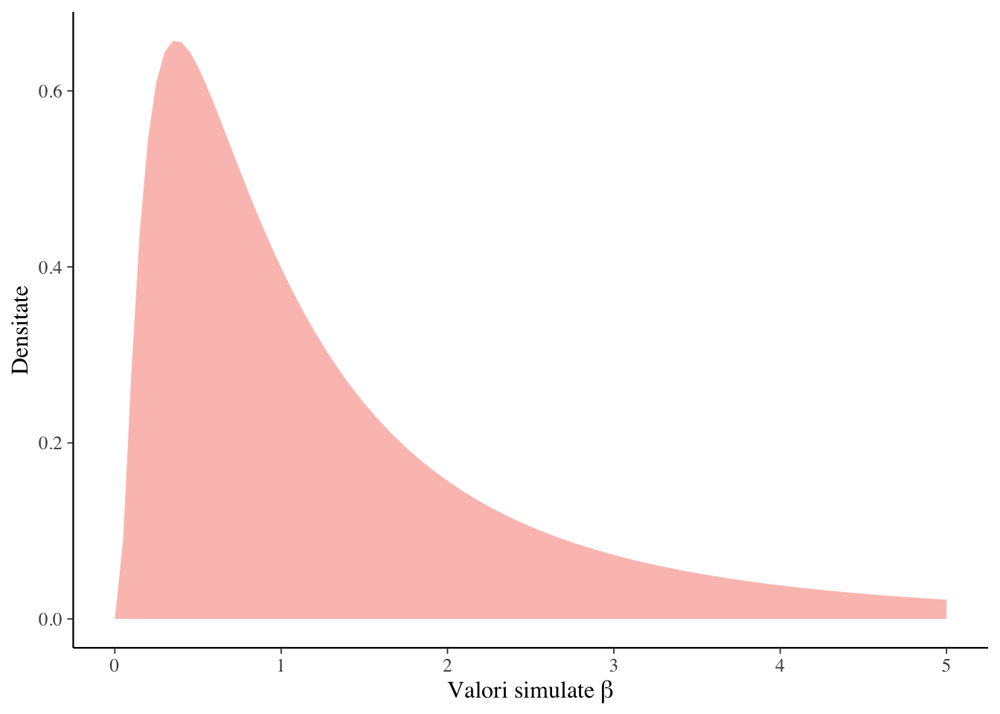
Modelul devine atunci:
priors <-c(prior(normal(178, 20), class = Intercept),prior(lognormal(0, 1), class = b, lb =0), # aiciprior("cauchy(0,2.5)", class ="sigma"))expectante_log <-brm(bf(inaltime ~1+ greutate_z),data = df,family =gaussian(),prior = priors,sample_prior ="only")conditional_effects(expectante_log)
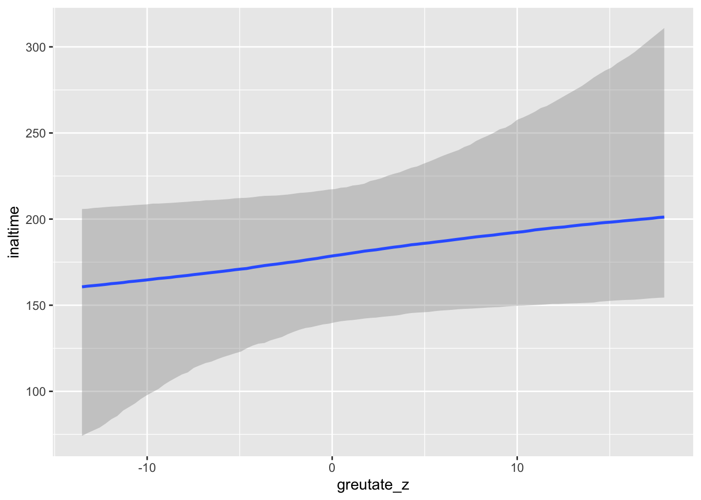
Odata ce expectantele modelululi sunt clare, putem sa le actualizam cu date. Si totusi sa vedem inca odata modelul formulat:
priors <-c(prior(normal(178, 20), class = Intercept),prior(lognormal(0, 1), class = b, lb =0),prior("cauchy(0,2.5)", class ="sigma"))model_final <-brm(bf(inaltime ~1+ greutate_z),data = df,family =gaussian(),prior = priors,chains =4,cores =4, warmup =2000,iter =4000)
Diagnostic
PPC
Verificarea predicțiilor posterioare (Posterior Predictive Check, PPC) este o tehnică utilizată în analiza Bayesiană pentru a evalua cât de bine modelul construit se potrivește datelor observate. Această metodă implică utilizarea distribuției posterioare a parametrilor modelului pentru a genera seturi de date simulate, care apoi sunt comparate cu setul de date original. Scopul este de a verifica dacă modelul poate reproduce caracteristicile observate ale datelor reale.
Validarea Modelului: PPC oferă o metodă directă pentru a verifica dacă modelul poate reproduce caracteristicile observate ale datelor, contribuind astfel la validarea modelului.
Îmbunătățirea Modelului: Prin identificarea deficiențelor în potrivirea modelului, PPC poate ghida ajustările și îmbunătățirile ulterioare ale modelului.
pp_check(model_final, ndraws =100)
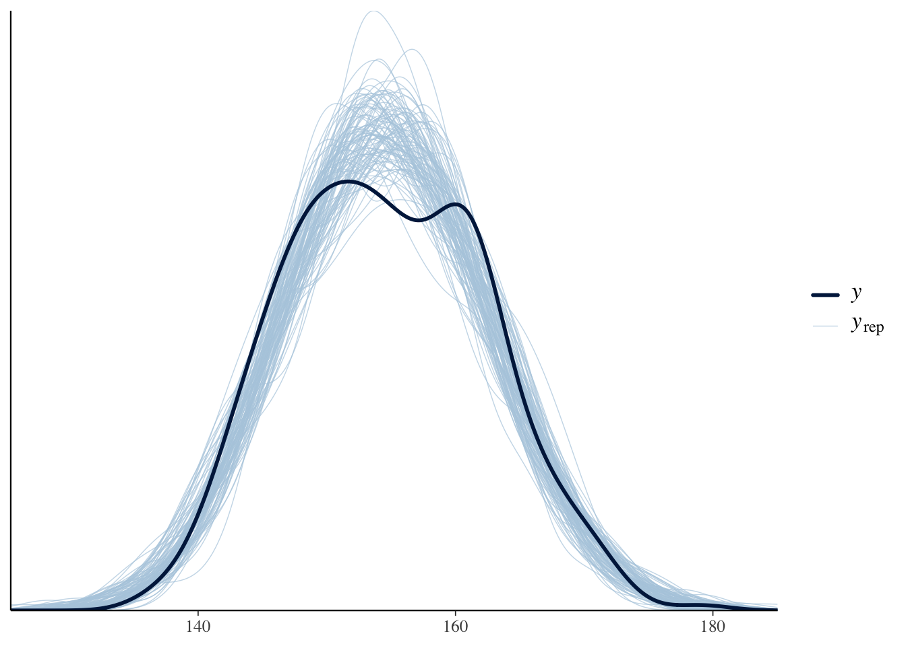
library(see)result <- bayestestR::hdi(model_final, ci =c(0.5, 0.75, 0.89, 0.95))plot(result, priors =TRUE)
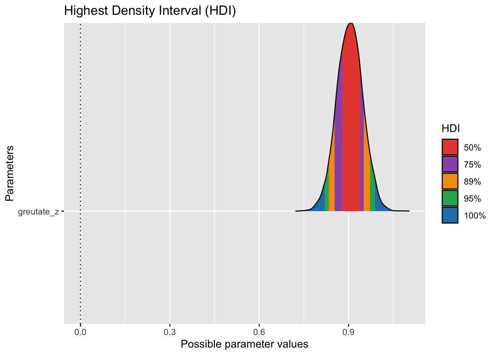
MCMC
În analiza bayesiană, spre deosebire de metodele frecventiste care se bazează pe estimări punctuale obținute prin algoritmi precum cel al pătratelor minime sau al verosimilității maxime, se urmărește producerea distribuției posterioare. Acest lucru este relativ simplu când distribuția posterioară se conformează unei distribuții de probabilitate cunoscute, cum ar fi distribuția normală sau beta, permitând inferențe directe bazate pe proprietățile distribuției. Cu toate acestea, distribuțiile posterioare nu se încadrează întotdeauna în formele cunoscute, făcând necesară utilizarea metodelor de simulare Markov Chain Monte Carlo (MCMC) pentru a genera extrageri aleatorii din distribuția posterioară.
Simulările MCMC sunt robuste și flexibile, fiind adesea folosite în cercetările bayesiene pentru a aproxima distribuții necunoscute. Aceste simulări permit calculul valorilor așteptate sau a intervalului de încredere pentru parametrii de interes din distribuția posterioară. De exemplu, având mii de extrageri aleatorii dintr-o distribuție posterioră normală cu medie cunoscută, dar deviație standard necunoscută, putem estima deviația standard și forma distribuției.
Metodele MCMC combină principiile simulărilor Monte Carlo cu procesele aleatorii Markov pentru a evalua dacă valorile propuse provin din distribuția posterioară, bazându-se pe cunoașterea densității posterioare și a datelor. Aceasta necesită mii de evaluări, acceptând sau respingând valorile propuse pentru a produce o secvență de extrageri din distribuția posterioară.
Software-urile statistice moderne, cum ar fi Stan accesat prin R, facilitează implementarea algoritmilor MCMC, permițând estimarea unor modele complexe. Stan, de exemplu, utilizează algoritmi de eșantionare eficienti precum Hamiltonian Monte Carlo și este disponibil ca sursă deschisă, fiind accesibil din mai multe limbaje de programare. Cu toate că necesită o curba de învățare pentru a stăpâni limbajul său de modelare și configurarea, avantajele includ viteza crescută de calcul și flexibilitatea în modelare.
library(bayesplot)posterior <-as.array(model_final)color_scheme_set("mix-blue-red")mcmc_trace(posterior, pars =c("b_greutate_z"))